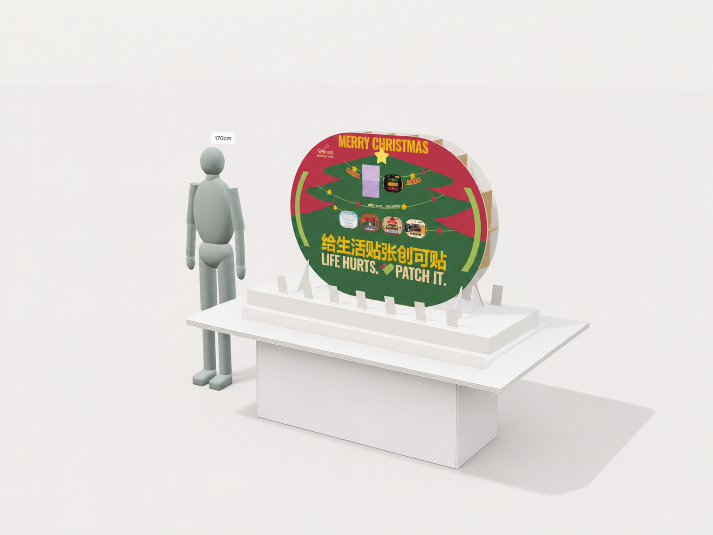
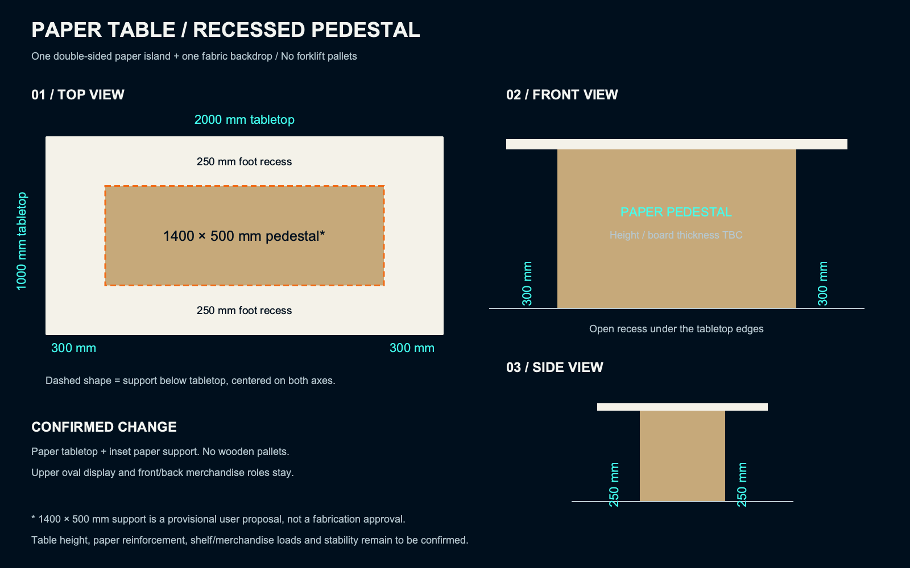

背景布尺寸已确认：宽3000×高3000mm。纸桌尺寸及前后陈列分工继续沿用；背景布尺寸不等同展位地面占地。
整个展位仍为一个双面纸中岛＋一片背景布。桌面2000×1000mm；居中纸桌身暂按1400×500mm，左右两端各留300mm、正背两侧各留250mm脚部空间。

上图为内置imagegen结构修正效果示意，原圣诞画面沿用参考；不代表本次联名视觉稿已确认。画面不作为尺寸证明；以下平面尺寸图为拟定几何依据。

原托盘670mm高度作废。新桌高、纸板厚度、挂货荷载与内部支撑待确定。
尺寸示意源文件 · 结构说明